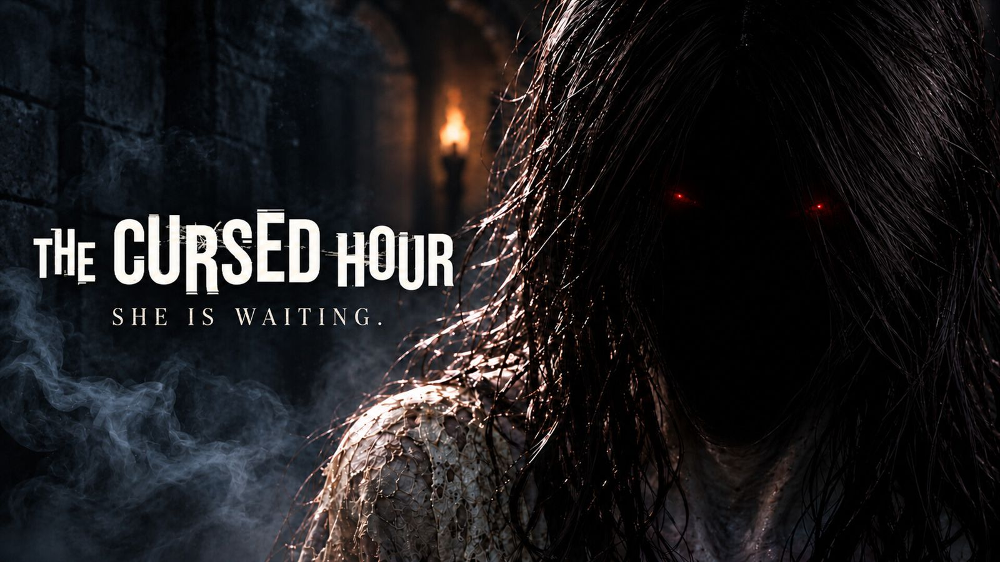
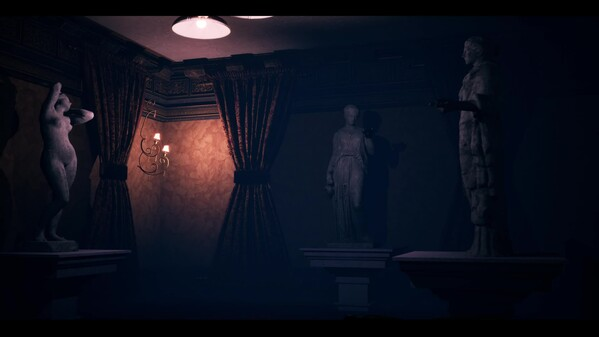
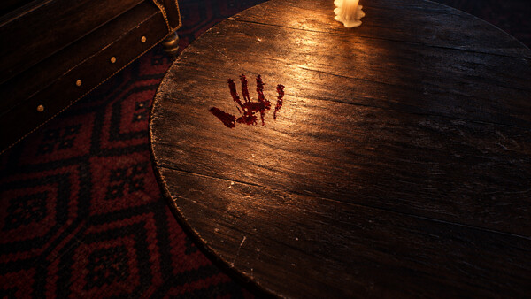
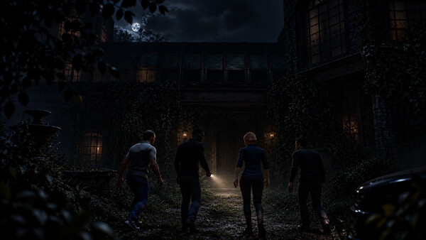

Home / Projects / The Cursed Hour
Studio project, Fiftyfive Gaming Studio
The Cursed Hour
A four-player cooperative horror game for Steam in Unreal Engine 5, with ghost AI, lobbies and sessions, and voice and text chat.

Overview
The Cursed Hour is a four-player online co-op horror game set in a haunted mansion. It released on Steam on 16 November 2024 as a free game, and as of November 2026 it has 171 followers and 132 reviews.
My role
I pitched the original concept and owned the core multiplayer systems through to ship. It was a studio project; the ghost NPC, the lobby and session layer and the chat systems are my contribution.
Main responsibilities
- The ghost NPC.
- The lobby and session layer.
- Text and voice chat.
- Epic Online Services and Steam SDK integration, in parallel.
Technical challenges
The game shipped on Steam, but a cross-platform rollout through Epic Online Services was planned. Both backends had to work behind one lobby and session experience, without game code depending on either.
Implementation
I integrated Epic Online Services and the Steam SDK side by side and kept the session layer backend-agnostic, so the game logic talks to one session interface.
Links and media

Watch the trailer on YouTube
